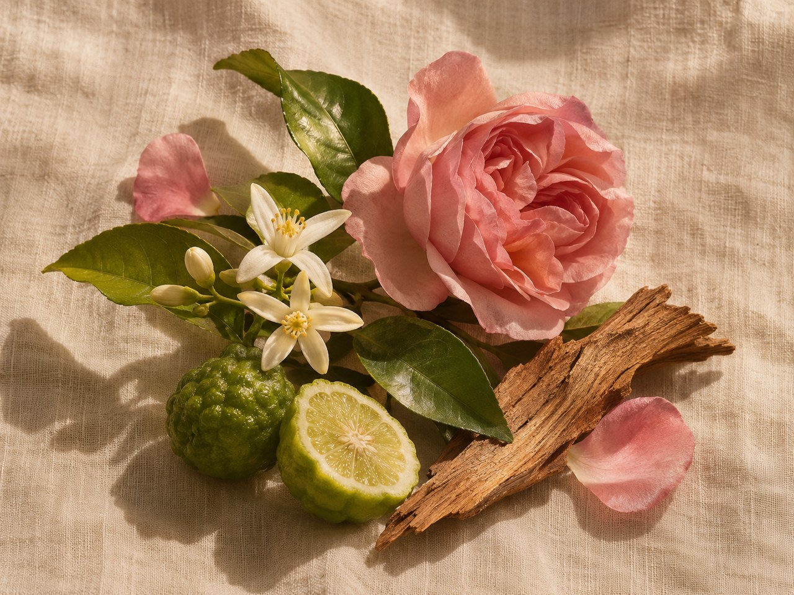

Selecciones
Cuatro florales que no se parecen entre sí
Jazmín solar, flor de azahar, almizcle y fruta: una guía a florales con personalidad.

Una familia, muchas formas
Llamar floral a un perfume dice poco sobre su personalidad. Una composición puede ser transparente y afrutada; otra, intensa y casi solar. Las notas que rodean a las flores importan tanto como las propias flores. Comparar aromas conocidos ayuda a descubrir qué faceta floral nos atrae y cuál preferimos evitar.
La delicadeza frente a la intensidad
Chance Eau Tendre Eau de Toilette de Chanel equilibra jazmín, pomelo, membrillo y almizcles blancos en un conjunto suave. Alien Eau de Parfum de Mugler destaca por un jazmín sambac de gran presencia, apoyado en cashmeran y ámbar blanco. Las dos contienen una referencia al jazmín, pero las impresiones que producen son muy distintas.
Lavanda y almizcle
Libre Eau de Parfum de Yves Saint Laurent integra lavanda y flor de azahar con una calidez de fondo. For Her Eau de Toilette de Narciso Rodriguez toma otra dirección: el almizcle ocupa el centro, acompañado de osmanto, flor de azahar, ámbar y pachulí. Ninguna de estas composiciones debería elegirse solo por la categoría de género comercial.
La comparación que más enseña
Elige dos florales y anota si parecen luminosos, limpios, cálidos o densos. Haz la primera prueba en papel y reserva la piel para el que más curiosidad te despierte. En ESTELA puedes abrir las cuatro fichas para leer notas y fuentes oficiales antes de decidir qué probar.
Comentarios
Los comentarios se guardan únicamente en este navegador y no se comparten con otras personas.